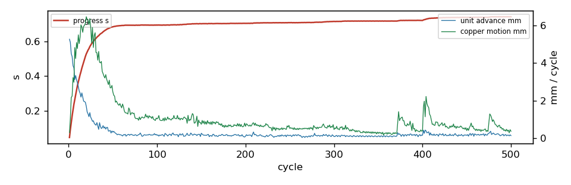

500 cycles in 969.2 s, progress s = 0.7418; 0/0 ghosts born; 112 parts moved; 20/48 reroutes verified in 3 rounds. Gate: 12/12 checkpoints pass (baseline 2 violations); length caps hit: 5; check_sync: True.
Region [130.0, 82.0, 149.5, 128.5]; rules clearance 0.1 mm, hole 0.254, edge 0.3, guard 0.015. 112 movable parts, 737 dynamic segments, 988 nodes, 0 ghosts. Orange pads = movable parts (dark orange = moved); grey = fixed; red = ghosts at their current scale; blue arrows = part displacement. Copper by layer: F red, B blue, In1 green, In2 purple, In3 brown, In4 teal; static copper grey.

| step | s | tag | unconnected | new_violations | static_missing | fixed_moved | ok | new_desc |
|---|---|---|---|---|---|---|---|---|
| 0 | 0.0 | start | 103 | 0 | 0 | [] | True | [] |
| 1 | 0.132 | 103 | 0 | 0 | [] | True | [] | |
| 2 | 0.205 | 103 | 0 | 0 | [] | True | [] | |
| 3 | 0.32 | 103 | 0 | 0 | [] | True | [] | |
| 4 | 0.408 | 103 | 0 | 0 | [] | True | [] | |
| 5 | 0.514 | 103 | 0 | 0 | [] | True | [] | |
| 6 | 0.601 | 103 | 0 | 0 | [] | True | [] | |
| 7 | 0.7 | 103 | 0 | 0 | [] | True | [] | |
| 8 | 0.717 | reroute | 103 | 0 | 0 | [] | True | [] |
| 9 | 0.721 | reroute | 103 | 0 | 0 | [] | True | [] |
| 10 | 0.738 | reroute | 103 | 0 | 0 | [] | True | [] |
| 11 | 0.742 | final | 103 | 0 | 0 | [] | True | [] |
none
| ref | dx | dy | mm | group |
|---|---|---|---|---|
| R74 | -0.037 | -1.074 | 1.075 | |
| R46 | 0.0 | 1.007 | 1.007 | |
| R77 | 0.005 | -1.005 | 1.005 | |
| TP2 | -0.002 | -1.004 | 1.004 | |
| R79 | -0.009 | -1.001 | 1.001 | |
| D20 | 0.028 | -1.0 | 1.0 | |
| R78 | -0.009 | -1.0 | 1.0 | |
| Q1 | -0.0 | -1.0 | 1.0 | |
| C33 | 0.0 | 1.0 | 1.0 | |
| C19 | 0.0 | 1.0 | 1.0 | |
| C54 | 0.0 | -1.0 | 1.0 | |
| R75 | -0.0 | -1.0 | 1.0 | |
| C23 | 0.0 | 1.0 | 1.0 | |
| R41 | -0.0 | 1.0 | 1.0 | |
| TP6 | 0.0 | 1.0 | 1.0 | |
| C7 | 0.0 | -1.0 | 1.0 | |
| R29 | -0.0 | 1.0 | 1.0 | |
| TP4 | 0.0 | 1.0 | 1.0 | |
| R48 | -0.0 | 1.0 | 1.0 | |
| C27 | 0.0 | 1.0 | 1.0 | |
| C44 | 0.0 | 1.0 | 1.0 | |
| C6 | 0.0 | -1.0 | 1.0 | |
| D19 | 0.0 | -1.0 | 1.0 | |
| C48 | 0.0 | -1.0 | 1.0 | |
| D3 | -0.0 | -1.0 | 1.0 | |
| R17 | 0.0 | -1.0 | 1.0 | |
| R10 | 0.0 | -1.0 | 1.0 | |
| R102 | 0.0 | -1.0 | 1.0 | |
| C53 | -0.0 | -1.0 | 1.0 | |
| C31 | -0.0 | 1.0 | 1.0 | |
| R76 | -0.0 | -1.0 | 1.0 | |
| R15 | -0.0 | -1.0 | 1.0 | |
| D12 | 0.0 | 1.0 | 1.0 | |
| D7 | 0.0 | -1.0 | 1.0 | |
| R12 | 0.0 | -1.0 | 1.0 | |
| D18 | 0.0 | -1.0 | 1.0 | |
| C34 | 0.0 | 1.0 | 1.0 | |
| R14 | 0.0 | -1.0 | 1.0 | |
| BH1 | 0.0 | 1.0 | 1.0 | |
| TP1 | 0.0 | -1.0 | 1.0 |
72 more not shown
| net | region_mm | grown_mm | growth_pct | allow_mm | cap_mm | at_cap |
|---|---|---|---|---|---|---|
| Net-(C54-Pad1) | 2.18 | 0.497 | 22.8 | 0.5 | 2.0 | |
| Net-(C53-Pad1) | 2.34 | 0.503 | 21.5 | 0.5 | 2.0 | |
| Net-(C9-Pad1) | 2.4 | 0.502 | 20.9 | 0.5 | 2.0 | |
| Net-(C33-Pad1) | 2.83 | 0.57 | 20.1 | 0.566 | 2.0 | |
| Net-(C26-Pad1) | 2.67 | 0.537 | 20.1 | 0.535 | 2.0 | |
| /D | 8.25 | 1.655 | 20.1 | 1.65 | 4.125 | |
| Net-(C7-Pad1) | 2.55 | 0.416 | 16.3 | 0.51 | 2.0 | |
| Net-(C25-Pad1) | 2.88 | 0.455 | 15.8 | 0.575 | 2.0 | |
| Net-(D6-K) | 1.42 | 0.2 | 14.1 | 0.2 | 0.8 | |
| Net-(D19-K) | 1.39 | 0.192 | 13.9 | 0.2 | 0.8 | |
| Net-(D16-K) | 1.51 | 0.201 | 13.3 | 0.2 | 0.8 | |
| /A_P | 33.52 | 4.402 | 13.1 | 6.704 | 16.76 | |
| GND | 84.27 | 10.95 | 13.0 | None | None | |
| /B_P | 29.41 | 3.507 | 11.9 | 5.882 | 14.705 | |
| Net-(D12-K) | 1.76 | 0.198 | 11.2 | 0.2 | 0.8 | |
| B_PHASE_SENSE | 44.25 | 4.445 | 10.1 | 4.425 | 8.849 | |
| C_PWM_L\ | 14.95 | 1.498 | 10.0 | 1.495 | 3.738 | |
| Net-(C34-Pad1) | 2.68 | 0.267 | 9.9 | 0.537 | 2.0 | |
| Vdrive | 133.36 | 10.541 | 7.9 | 40.009 | 133.362 | |
| Net-(U12-VB) | 4.0 | 0.3 | 7.5 | 0.0 | 0.3 | YES |
| +3V3 | 81.45 | 4.781 | 5.9 | 24.435 | 81.452 | |
| Net-(U7-LO) | 5.44 | 0.3 | 5.5 | 0.0 | 0.3 | YES |
| /ENC_D_DATA | 33.03 | 1.783 | 5.4 | 6.605 | 16.513 | |
| /2CGH | 5.92 | 0.301 | 5.1 | 0.0 | 0.3 | YES |
| Net-(U6-LO) | 6.21 | 0.313 | 5.0 | 0.0 | 0.311 | YES |
| Net-(D14-K) | 4.02 | 0.201 | 5.0 | 0.201 | 0.8 | |
| Net-(D3-K) | 4.96 | 0.248 | 5.0 | 0.248 | 0.8 | |
| /2AGH | 6.89 | 0.345 | 5.0 | 0.0 | 0.344 | YES |
| Net-(D15-K) | 4.29 | 0.211 | 4.9 | 0.215 | 0.8 | |
| Net-(U1-VB) | 6.3 | 0.295 | 4.7 | 0.0 | 0.315 | |
| Net-(U12-HO) | 6.0 | 0.251 | 4.2 | 0.0 | 0.3 | |
| Net-(D18-K) | 7.13 | 0.273 | 3.8 | 0.357 | 1.07 | |
| /2DGL | 9.13 | 0.317 | 3.5 | 0.0 | 0.457 | |
| D_PWM_L\ | 30.41 | 0.98 | 3.2 | 3.041 | 7.602 | |
| /C_P | 27.53 | 0.869 | 3.2 | 5.506 | 13.765 | |
| /I2C_SCL | 35.41 | 1.041 | 2.9 | 7.082 | 17.706 | |
| C_PWM_H | 11.92 | 0.342 | 2.9 | 1.192 | 3.0 | |
| /H2_SW | 34.19 | 0.967 | 2.8 | 6.838 | 17.096 | |
| Net-(Q3-B) | 1.61 | 0.045 | 2.8 | 0.0 | 0.3 | |
| Net-(Q4-E) | 3.77 | 0.083 | 2.2 | 0.0 | 0.3 |
39 more not shown
| unit | hard_walled | blocker | net | ref | margin | floor | pos |
|---|---|---|---|---|---|---|---|
| C36 | courtyard | U7 | -0.05 | 0.003 | |||
| D13 | courtyard | R39 | -0.05 | 0.003 | |||
| R39 | courtyard | D13 | -0.05 | 0.003 | |||
| D10 | courtyard | C15 | -0.05 | 0.003 | |||
| Q2 | dyn_seg | Net-(Q2-E) | -0.0371 | 0.0 | [133.209, 102.857] | ||
| CL1 | dyn_seg | /EXT_ANALOG2 | -0.0132 | 0.015 | [141.098, 84.48] | ||
| U6 | dyn_via | GND | 0.0045 | 0.015 | [142.373, 106.192] | ||
| U6 | dyn_via | GND | 0.0066 | 0.015 | [142.373, 106.192] | ||
| U6 | dyn_via | GND | 0.0048 | 0.015 | [142.373, 106.192] | ||
| U6 | dyn_via | GND | 0.0142 | 0.015 | [141.804, 106.136] | ||
| R101 | dyn_seg | /I2C_SCL | -0.0084 | 0.015 | [133.878, 116.903] | ||
| R23 | courtyard | D13 | -0.05 | 0.003 | |||
| TP10 | dyn_via | GND | -0.0012 | 0.015 | [138.592, 117.853] | ||
| TP10 | dyn_via | GND | -0.0334 | 0.015 | [138.592, 117.853] | ||
| TP10 | dyn_via | GND | -0.0334 | 0.015 | [138.592, 117.853] | ||
| TP10 | dyn_via | GND | 0.0123 | 0.015 | [138.592, 117.853] | ||
| Q4 | static_via | /D | 0.0028 | 0.015 | [129.7, 121.1] | ||
| Q4 | static_via | /D | -0.0245 | 0.015 | [129.7, 121.1] | ||
| Q4 | static_via | /D | -0.0343 | 0.015 | [129.7, 121.1] | ||
| Q4 | static_via | /D | 0.0117 | 0.015 | [129.7, 121.1] | ||
| R30 | dyn_via | GND | -0.0338 | 0.015 | [133.346, 101.506] | ||
| R30 | dyn_via | GND | -0.0338 | 0.015 | [133.346, 101.506] | ||
| R30 | dyn_via | GND | -0.0181 | 0.015 | [133.346, 101.506] | ||
| R30 | dyn_via | GND | 0.0122 | 0.015 | [133.346, 101.506] | ||
| C15 | courtyard | D10 | -0.05 | 0.003 | |||
| grp:D7 | dyn_seg | Net-(D7-K) | -0.0112 | 0.0 | [136.489, 109.437] | ||
| grp:D7 | dyn_via | GND | 0.0119 | 0.015 | [136.13, 106.478] | ||
| grp:D7 | dyn_via | GND | -0.032 | 0.015 | [136.13, 106.478] | ||
| grp:D7 | dyn_via | GND | 0.014 | 0.015 | [136.13, 106.478] | ||
| D6 | dyn_seg | /2AGH | -0.0209 | 0.0 | [146.048, 109.629] | ||
| D6 | length_cap | /2AGH | -0.0349 | 0.0 | |||
| R20 | courtyard | R23 | -0.05 | 0.003 | |||
| R37 | courtyard | C1 | 0.0024 | 0.003 | |||
| BL1 | pad | /B_P | U6.6 | -0.0476 | 0.0 | [140.086, 99.766] | |
| U7 | dyn_via | C_PWM_H | 0.0144 | 0.015 | [141.347, 93.048] | ||
| U7 | dyn_via | C_PWM_H | -0.0366 | -0.005 | [141.347, 93.048] | ||
| U7 | dyn_seg | Net-(U7-HO) | -0.0307 | 0.015 | [141.749, 89.613] | ||
| U7 | dyn_seg | Net-(U7-HO) | -0.0266 | 0.015 | [141.749, 89.613] | ||
| grp:BL1 | length_cap | Net-(U6-LO) | -0.0046 | 0.0 | |||
| grp:BL1 | dyn_via | /2BGL | -0.0153 | -0.0122 | [136.832, 96.871] | ||
| grp:BL1 | dyn_seg | Net-(U6-LO) | -0.0101 | 0.015 | [137.402, 100.75] | ||
| grp:BL1 | dyn_seg | Net-(U6-LO) | -0.0116 | 0.015 | [137.402, 100.75] | ||
| D17 | courtyard | R40 | -0.05 | 0.003 | |||
| D16 | courtyard | U7 | -0.05 | 0.003 | |||
| C1 | courtyard | R37 | -0.05 | 0.003 | |||
| grp:D13 | dyn_via | /H2_SW | -0.0136 | 0.015 | [133.284, 116.573] | ||
| grp:D13 | dyn_seg | /I2C_SCL | -0.0103 | 0.015 | [133.878, 116.903] | ||
| grp:D13 | dyn_via | GND | 0.0106 | 0.015 | [134.401, 117.286] | ||
| grp:D13 | courtyard | R40 | -0.05 | 0.003 | |||
| grp:D16 | dyn_seg | /2CGL | -0.0055 | 0.0 | [137.083, 84.544] | ||
| grp:D16 | dyn_seg | Net-(U7-LO) | -0.0429 | 0.0 | [136.882, 90.008] | ||
| grp:D16 | dyn_seg | Net-(D16-K) | -0.0063 | 0.0 | [137.151, 87.244] | ||
| grp:D16 | dyn_seg | Net-(U7-LO) | -0.0155 | 0.0 | [137.621, 88.83] | ||
| AH1 | dyn_seg | /2AGH | -0.0033 | 0.0 | [144.134, 112.549] | ||
| AH1 | courtyard | C1 | -0.05 | 0.003 | |||
| R55 | courtyard | D17 | -0.05 | 0.003 | |||
| CL2 | dyn_seg | /2DGL | -0.0357 | 0.0 | [136.128, 119.669] | ||
| U12 | dyn_via | D_PWM_L\ | -0.0493 | 0.0 | [140.222, 125.4] | ||
| U12 | dyn_seg | Net-(U12-HO) | -0.0169 | 0.015 | [141.866, 122.781] | ||
| U12 | dyn_seg | Net-(U12-HO) | -0.0166 | 0.015 | [141.866, 122.781] |
199 more not shown
| mover | blocker | what | hits |
|---|---|---|---|
| node1030 | pad | U10.8 [/A_N] | 5396 |
| node312 | pad | U10.8 [/A_N] | 3437 |
| node298 | pad | U10.8 [/A_N] | 3434 |
| node299 | pad | U10.8 [/A_N] | 2934 |
| node295 | pad | U10.8 [/A_N] | 2461 |
| node315 | pad | U10.8 [/A_N] | 1964 |
| Q4 | static_via | /D | 1958 |
| grp:Q4 | static_via | /D | 1930 |
| node296 | pad | U10.8 [/A_N] | 1476 |
| node279 | pad | U9.1 [/B_P] | 1461 |
| node1020 | pad | U9.1 [/B_P] | 1341 |
| node279 | dyn_seg | /B_P | 978 |
| node279 | dyn_via | /B_P | 978 |
| node1019 | pad | U9.1 [/B_P] | 974 |
| node307 | dyn_via | /B_P | 971 |
| D17 | courtyard | R40 | 496 |
| grp:D13 | courtyard | R40 | 496 |
| grp:D17 | courtyard | R40 | 495 |
| R25 | courtyard | C11 | 491 |
| R28 | length_cap | Net-(U6-LO) | 488 |
| node305 | dyn_via | /B_P | 481 |
| C10 | length_cap | Net-(U1-VB) | 480 |
| D6 | length_cap | /2AGH | 474 |
| node350 | length_cap | /2AGH | 467 |
| node2648 | length_cap | Net-(U6-LO) | 466 |
{
"name": "power_squeeze",
"board": "/home/sequoia/pcb/rp2350-motor-controller-lean-jiggle/hardware/rp2350_driver.kicad_pcb",
"region": [
130.0,
82.0,
149.5,
128.5
],
"rules": {
"guard": 0.015
},
"locked": {
"sides": [],
"refs": [
"H3",
"H4",
"J1",
"J2",
"J9",
"J10",
"C80",
"C39",
"C42",
"D5"
],
"nets": [
"^/USB_D",
"^/CAN0_"
],
"rects": []
},
"mobility": {
"default": 1.0
},
"groups": {},
"drive": {
"inflate": [],
"shove": [
{
"rect": [
130.0,
82.0,
149.5,
94.5
],
"vector": [
0.0,
1.0
]
},
{
"rect": [
130.0,
94.5,
149.5,
105.5
],
"vector": [
0.0,
1.0
]
},
{
"rect": [
130.0,
105.5,
149.5,
117.0
],
"vector": [
0.0,
-1.0
]
},
{
"rect": [
130.0,
117.0,
149.5,
128.5
],
"vector": [
0.0,
-1.0
]
}
]
},
"step": 0.05,
"snapshots": 10,
"cycles": 400,
"data": "/home/sequoia/pcb/rp2350-motor-controller-lean-jiggle/hardware/tools/settle/configs/data/power_squeeze"
}
{
"default": {
"k": 0.5,
"allow": 0.2,
"cap": 0.5,
"allow_mm": 0.5,
"cap_mm": 2.0
},
"classes": {
"VMOT": {
"k": 0.2,
"allow": 0.3,
"cap": 1.0,
"allow_mm": 1.0,
"cap_mm": 6.0
},
"power": {
"k": 0.2,
"allow": 0.3,
"cap": 1.0,
"allow_mm": 1.0,
"cap_mm": 6.0
},
"usb_5A": {
"k": 0.2,
"allow": 0.3,
"cap": 1.0,
"allow_mm": 1.0,
"cap_mm": 6.0
},
"low_power": {
"k": 0.2,
"allow": 0.3,
"cap": 1.0,
"allow_mm": 1.0,
"cap_mm": 6.0
}
},
"nets": {
"^GND": {
"k": 0.0,
"allow": 1000000000.0,
"cap": 1000000000.0
},
"^(VMOT|Vdrive|VBUS|\\+3V3|\\+1V1|\\+5V_ISO|/V_ENC|/V_SW)$": {
"k": 0.2,
"allow": 0.3,
"cap": 1.0,
"allow_mm": 1.0,
"cap_mm": 6.0
},
"^Net-\\(U(1|6|7|12)-(HO|LO|VB)\\)$": {
"k": 4.0,
"allow": 0.0,
"cap": 0.05,
"allow_mm": 0.0,
"cap_mm": 0.3
},
"^/2[ABCD]G[HL]$": {
"k": 4.0,
"allow": 0.0,
"cap": 0.05,
"allow_mm": 0.0,
"cap_mm": 0.3
},
"^Net-\\(Q[1-4]-[BE]\\)$": {
"k": 4.0,
"allow": 0.0,
"cap": 0.05,
"allow_mm": 0.0,
"cap_mm": 0.3
},
"^Net-\\((R(24|59|62|67|70)|D\\d+)-": {
"k": 2.0,
"allow": 0.05,
"cap": 0.15,
"allow_mm": 0.2,
"cap_mm": 0.8
},
"^/USB_D": {
"k": 4.0,
"allow": 0.0,
"cap": 0.02,
"allow_mm": 0.0,
"cap_mm": 0.1
},
"^/CAN0_": {
"k": 4.0,
"allow": 0.0,
"cap": 0.02,
"allow_mm": 0.0,
"cap_mm": 0.1
},
"^/ENC_[A-D]_(P|N)(_SW)?$": {
"k": 1.0,
"allow": 0.1,
"cap": 0.15,
"allow_mm": 0.5,
"cap_mm": 2.0
},
"^/ENC_[A-D]_TRX_": {
"k": 1.0,
"allow": 0.1,
"cap": 0.2,
"allow_mm": 0.5,
"cap_mm": 2.0
},
"^[ABCD]_PWM_": {
"k": 1.0,
"allow": 0.1,
"cap": 0.25,
"allow_mm": 0.5,
"cap_mm": 3.0
},
"SENSE": {
"k": 1.0,
"allow": 0.1,
"cap": 0.2,
"allow_mm": 0.5,
"cap_mm": 2.0
}
}
}
s] cycle 145: s=0.702 ghosts=0/0 blocked=65 adv=0.124mm copper=1.165mm [298s] cycle 150: s=0.702 ghosts=0/0 blocked=65 adv=0.250mm copper=0.730mm [307s] cycle 155: s=0.702 ghosts=0/0 blocked=65 adv=0.139mm copper=0.871mm [317s] cycle 160: s=0.702 ghosts=0/0 blocked=65 adv=0.130mm copper=0.732mm [326s] cycle 165: s=0.703 ghosts=0/0 blocked=65 adv=0.115mm copper=0.841mm [335s] cycle 170: s=0.703 ghosts=0/0 blocked=67 adv=0.143mm copper=0.709mm [345s] cycle 175: s=0.703 ghosts=0/0 blocked=66 adv=0.128mm copper=0.674mm [354s] cycle 180: s=0.703 ghosts=0/0 blocked=66 adv=0.109mm copper=0.588mm [364s] cycle 185: s=0.704 ghosts=0/0 blocked=66 adv=0.134mm copper=0.617mm [373s] cycle 190: s=0.704 ghosts=0/0 blocked=67 adv=0.141mm copper=0.630mm [383s] cycle 195: s=0.704 ghosts=0/0 blocked=66 adv=0.102mm copper=0.724mm [392s] cycle 200: s=0.704 ghosts=0/0 blocked=66 adv=0.096mm copper=0.620mm [402s] cycle 205: s=0.704 ghosts=0/0 blocked=65 adv=0.156mm copper=0.694mm [411s] cycle 210: s=0.706 ghosts=0/0 blocked=67 adv=0.168mm copper=0.678mm [421s] cycle 215: s=0.707 ghosts=0/0 blocked=66 adv=0.118mm copper=0.683mm [431s] cycle 220: s=0.707 ghosts=0/0 blocked=65 adv=0.083mm copper=0.590mm [440s] cycle 225: s=0.707 ghosts=0/0 blocked=65 adv=0.077mm copper=0.706mm [450s] cycle 230: s=0.707 ghosts=0/0 blocked=67 adv=0.115mm copper=0.378mm [460s] cycle 235: s=0.707 ghosts=0/0 blocked=64 adv=0.074mm copper=0.535mm [469s] cycle 240: s=0.708 ghosts=0/0 blocked=67 adv=0.090mm copper=0.459mm [479s] cycle 245: s=0.708 ghosts=0/0 blocked=67 adv=0.151mm copper=0.483mm [489s] cycle 250: s=0.708 ghosts=0/0 blocked=64 adv=0.141mm copper=0.510mm [498s] cycle 255: s=0.708 ghosts=0/0 blocked=65 adv=0.113mm copper=0.551mm [508s] cycle 260: s=0.708 ghosts=0/0 blocked=66 adv=0.167mm copper=0.443mm [517s] cycle 265: s=0.708 ghosts=0/0 blocked=64 adv=0.078mm copper=0.517mm [527s] cycle 270: s=0.709 ghosts=0/0 blocked=65 adv=0.040mm copper=0.472mm [537s] cycle 275: s=0.709 ghosts=0/0 blocked=65 adv=0.115mm copper=0.548mm [547s] cycle 280: s=0.710 ghosts=0/0 blocked=64 adv=0.130mm copper=0.488mm [556s] cycle 285: s=0.710 ghosts=0/0 blocked=64 adv=0.131mm copper=0.566mm [566s] cycle 290: s=0.713 ghosts=0/0 blocked=63 adv=0.136mm copper=0.557mm [577s] cycle 295: s=0.714 ghosts=0/0 blocked=65 adv=0.139mm copper=0.691mm [586s] cycle 300: s=0.715 ghosts=0/0 blocked=64 adv=0.075mm copper=0.448mm [596s] cycle 305: s=0.715 ghosts=0/0 blocked=64 adv=0.121mm copper=0.489mm [605s] cycle 310: s=0.716 ghosts=0/0 blocked=65 adv=0.118mm copper=0.442mm [614s] cycle 315: s=0.717 ghosts=0/0 blocked=65 adv=0.105mm copper=0.556mm [624s] cycle 320: s=0.717 ghosts=0/0 blocked=63 adv=0.074mm copper=0.373mm [633s] cycle 325: s=0.717 ghosts=0/0 blocked=64 adv=0.068mm copper=0.398mm [643s] cycle 330: s=0.717 ghosts=0/0 blocked=65 adv=0.113mm copper=0.279mm [652s] cycle 335: s=0.717 ghosts=0/0 blocked=66 adv=0.065mm copper=0.332mm [662s] cycle 340: s=0.717 ghosts=0/0 blocked=65 adv=0.109mm copper=0.270mm [671s] cycle 345: s=0.717 ghosts=0/0 blocked=65 adv=0.066mm copper=0.317mm [680s] cycle 350: s=0.717 ghosts=0/0 blocked=65 adv=0.107mm copper=0.239mm [689s] cycle 355: s=0.717 ghosts=0/0 blocked=66 adv=0.057mm copper=0.303mm [699s] cycle 360: s=0.717 ghosts=0/0 blocked=66 adv=0.102mm copper=0.195mm [708s] cycle 365: s=0.717 ghosts=0/0 blocked=65 adv=0.068mm copper=0.180mm [717s] cycle 370: s=0.717 ghosts=0/0 blocked=66 adv=0.080mm copper=0.232mm [727s] stall at cycle 371 (s=0.717): reroute round 1 reroute round 1: 9/16 chains rerouted (122 candidates) checkpoint 9: s=0.717 reroute cycle 375: s=0.721 ghosts=0/0 blocked=66 adv=0.174mm copper=1.038mm [740s] cycle 380: s=0.720 ghosts=0/0 blocked=62 adv=0.167mm copper=0.697mm [750s] cycle 385: s=0.721 ghosts=0/0 blocked=62 adv=0.134mm copper=0.691mm [759s] cycle 390: s=0.721 ghosts=0/0 blocked=62 adv=0.153mm copper=0.479mm [768s] cycle 395: s=0.721 ghosts=0/0 blocked=61 adv=0.065mm copper=0.366mm [777s] cycle 400: s=0.721 ghosts=0/0 blocked=61 adv=0.144mm copper=0.378mm [786s] stall at cycle 400 (s=0.721): reroute round 2 reroute round 2: 6/16 chains rerouted (104 candidates) checkpoint 10: s=0.721 reroute cycle 405: s=0.730 ghosts=0/0 blocked=61 adv=0.271mm copper=1.836mm [798s] cycle 410: s=0.734 ghosts=0/0 blocked=63 adv=0.157mm copper=0.949mm [808s] cycle 415: s=0.734 ghosts=0/0 blocked=61 adv=0.151mm copper=0.860mm [817s] cycle 420: s=0.736 ghosts=0/0 blocked=64 adv=0.206mm copper=0.714mm [826s] cycle 425: s=0.737 ghosts=0/0 blocked=62 adv=0.143mm copper=0.776mm [835s] cycle 430: s=0.737 ghosts=0/0 blocked=62 adv=0.121mm copper=0.520mm [844s] cycle 435: s=0.738 ghosts=0/0 blocked=60 adv=0.117mm copper=0.745mm [852s] cycle 440: s=0.738 ghosts=0/0 blocked=61 adv=0.089mm copper=0.564mm [861s] cycle 445: s=0.738 ghosts=0/0 blocked=60 adv=0.127mm copper=0.532mm [870s] cycle 450: s=0.738 ghosts=0/0 blocked=61 adv=0.138mm copper=0.394mm [878s] cycle 455: s=0.739 ghosts=0/0 blocked=62 adv=0.134mm copper=0.797mm [887s] cycle 460: s=0.739 ghosts=0/0 blocked=61 adv=0.188mm copper=0.396mm [896s] cycle 465: s=0.738 ghosts=0/0 blocked=62 adv=0.153mm copper=0.456mm [904s] cycle 470: s=0.739 ghosts=0/0 blocked=62 adv=0.109mm copper=0.456mm [913s] stall at cycle 474 (s=0.738): reroute round 3 reroute round 3: 5/16 chains rerouted (110 candidates) checkpoint 11: s=0.738 reroute cycle 475: s=0.739 ghosts=0/0 blocked=61 adv=0.241mm copper=0.815mm [925s] cycle 480: s=0.741 ghosts=0/0 blocked=60 adv=0.262mm copper=0.972mm [934s] cycle 485: s=0.742 ghosts=0/0 blocked=61 adv=0.226mm copper=0.579mm [943s] cycle 490: s=0.741 ghosts=0/0 blocked=61 adv=0.164mm copper=0.462mm [952s] cycle 495: s=0.742 ghosts=0/0 blocked=62 adv=0.116mm copper=0.463mm [960s] cycle 500: s=0.742 ghosts=0/0 blocked=61 adv=0.124mm copper=0.357mm [969s] checkpoint 12: s=0.742 final wrote traj.json (12 checkpoints) + settle_report.json in 969s: 112 parts moved, 27 nets over allowance, 14301 length-cap hits, 0 board-edge hits — run emit.py